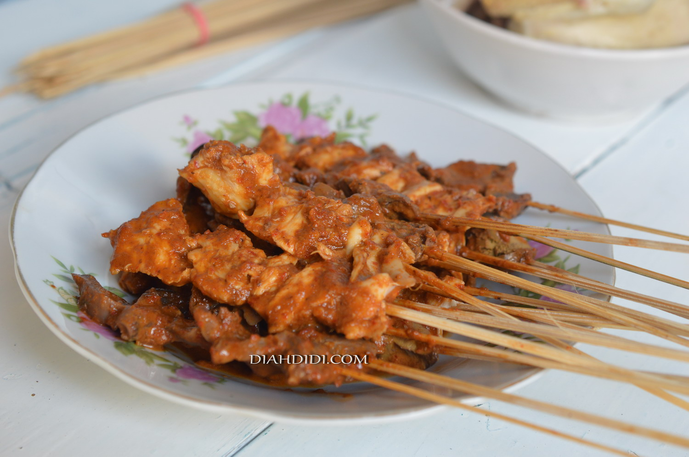

Sate Serepeh ini merupakan kuliner wajib saya kalau pulang kampung. Rasanya nikmat banget kl dimakan dengan tahu campur. Josss....
Bahan Bahan:
- 500 gram Daging Ayam
- 8 siung Bawang Merah
- 4 siung Bawang Putih
- 3 butir Cabe Merah Besar
- secukupnya Gula Merah
- Secukupny Garam
- 200 ml Santan Kental
- 500 ml Air
Cara Membuat:
- Haluskan bawang merah, bawang putih dan cabe merah. Tumis dengang sedikit minyak. Masukkan gula merah, garam dan terakhir santan.
- Rebus daging ayam yang telah ditata di tusuk sate kedalam kuah santan sampai seluruh bagian sate terendam bumbu. Masak sampai daging aya matang.
- Bakar sebentar di atas bara api sebelum disajikan.